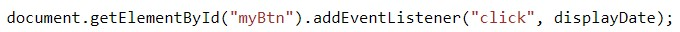
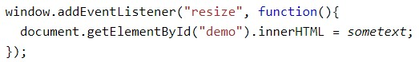
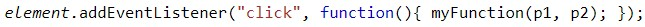
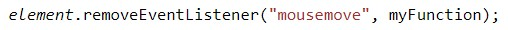

APRENDAMOS
El método addEventListener()
Ejemplo
Agregue un detector de eventos que se active cuando un usuario haga clic en un botón:
Intentalo
El addEventListener()método adjunta un controlador de eventos al elemento especificado sin sobrescribir los controladores de eventos existentes. Puede agregar muchos controladores de eventos a un elemento es decir, dos eventos de "clic".
Puede agregar detectores de eventos a cualquier objeto DOM, no solo elementos HTML. es decir, el objeto ventana, facilita el control de cómo reacciona el evento al burbujeo. Al usar el addEventListener()método, el JavaScript se separa del marcado HTML, para una mejor legibilidad y le permite agregar detectores de eventos incluso cuando no controla el marcado HTML.
Puede eliminar fácilmente un detector de eventos utilizando el removeEventListener()método.
Sintaxis
element.addEventListener(event, function, useCapture);
El primer parámetro es el tipo de evento (como " click" o " mousedown" o cualquier otro evento HTML DOM ).
El segundo parámetro es la función que queremos llamar cuando ocurra el evento.
El tercer parámetro es un valor booleano que especifica si se debe usar el burbujeo de eventos o la captura de eventos. Este parámetro es opcional.
Agregue un controlador de eventos al objeto de la ventana
El addEventListener()método le permite agregar detectores de eventos en cualquier objeto HTML DOM, como elementos HTML, el documento HTML, el objeto de ventana u otros objetos que admitan eventos, como el xmlHttpRequestobjeto.
Ejemplo
Agregue un detector de eventos que se activa cuando un usuario cambia el tamaño de la ventana:
Intentalo
Pasando Parámetros
Al pasar valores de parámetros, use una "función anónima" que llame a la función especificada con los parámetros:
Ejemplo
Intentalo
El método removeEventListener()
El removeEventListener()método elimina los controladores de eventos que se han adjuntado con el método addEventListener():
Ejemplo
Intentalo
MAS
Hay dos formas de propagación de eventos en HTML DOM, burbujeo y captura. La propagación de eventos es una forma de definir el orden de los elementos cuando ocurre un evento. Si tiene un elemento p dentro de un elemento div y el usuario hace clic en el elemento p, ¿qué evento de "clic" de elemento debe manejarse primero?
Al burbujear , el evento del elemento más interno se maneja primero y luego el externo: el evento de clic del elemento p se maneja primero, luego el evento de clic del elemento div.
Al capturar el evento del elemento más externo se maneja primero y luego el interno: el evento de clic del elemento div se manejará primero, luego el evento de clic del elemento p.
Con el método addEventListener() puedes especificar el tipo de propagación usando el parámetro "useCapture": addEventListener(event, function, useCapture);
El valor predeterminado es falso, que usará la propagación burbujeante, cuando el valor se establece en verdadero, el evento usa la propagación de captura.